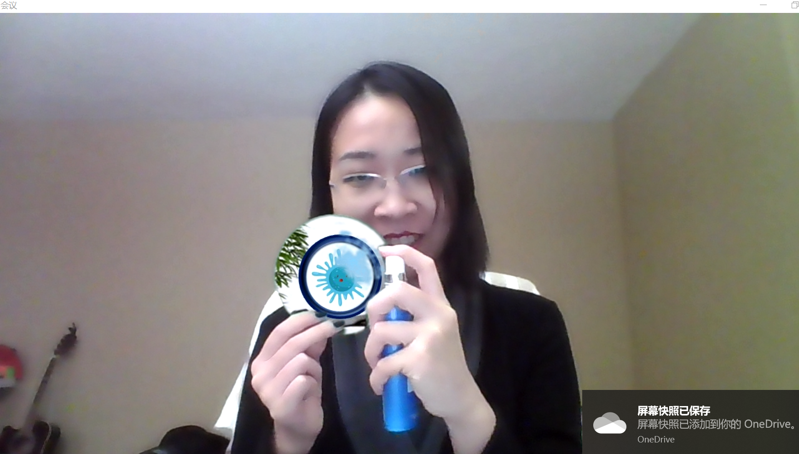
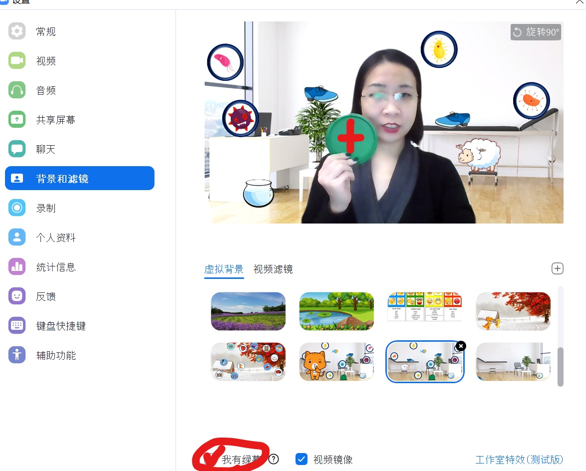

。Clinical Resources
<< Shushing Cat Sanitizes the Room: /ʃ/ in Isolation and Syllables
I developed a mini-greenscreen activity for children with speech sound disorders to work on /sh/ in isolation and syllab les. The treatment plan was developed in conjunction with my clinical partner, Keely Morrow, BA (Hons), MSc. Linguistics, who is a 2nd-year MSc. Speech-Language Pathology student at the University of Alberta.
The activity is about Shushing Cat asking you to help sanitize the room. Shushing Cat says "sh" and asks for help, so the clinician can start from pre-teaching the "sh" sound. The clinician uses a "magnifying glass" to look for the germs, and the child can tell the clinician where to go.
Once a germ is located, the child is asked to produce the "sh" sound or syllables multiple times to spray the sanitizer. Eventually, the germs will all be killed, and the room is clean again.

To play this type of I-Spy games on Zoom, you need to have a piece of solid color. Green is preferred because our skin doesn't usually include a green tone. But any other saturated colors such as blue or red can work as well. I simply use a yogurt lid!

Open your video settings and choose "I have a green screen", then capture the color of your "magnifier". That piece of color will be recognized as a greenscreen thus replaced by the background picture.

Keep the setting window on. To make the germ disappear, you need to switch the background picture to the one without germs.

The activity can be adapted to any other I-Spy games of the child's interest. Like you might have seen in the background pictures, I also included some /sh/ words to elicit some spontaneous word productions. This worked well because those items were pretty funny to be in the background! You can also talk about "waSHing hands" and incorporate sanitizing routines into this activity, which is a good fit for the current pandemic context.
Download: The background pictures with germs and without germs can be downloaded here. The germ images were adapted from a VectorStock image.
{kind=link}
{kind=link}
Should you have any questions regarding this activity, please feel free to contact me.